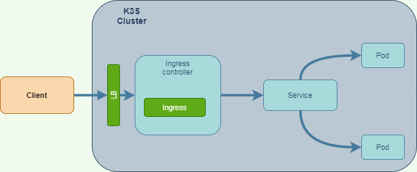
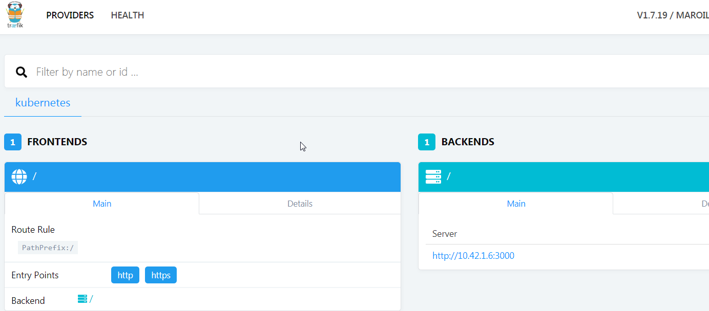

Kubernetes Advanced
Ok we will continue with our K3S cluster
Routing service with ingress
So we have installed a K3S Kubernetes that comes with pre-installed feature. One is the reverse proxy [Traefik] (https://doc.traefik.io/traefik/)
From the documentation:
Traefik is an open-source Edge Router that makes publishing your services a fun and easy experience. It receives requests on behalf of your system and finds out which components are responsible for handling them.
Directing traffic from external clients to the containers within the cloud, while ensuring the external client remains agnostic to the cloud, is a recurring problem. A common solution is to create an ingress controller. The ingress controller is delegated the responsibility of taking incoming traffic from an external client, and determining to which container the traffic should be directed.

Terminology
| term | Meaning |
|---|---|
| Ingress | A Kubernetes Ingress exposes HTTP and HTTPS traffic from outside the Cluster to Services within the cluster. |
| Ingress Controller | An application that is responsible for fulfilling Ingress requests. |
| Service | A Kubernetes Service is an abstract way to expose an application running in a set of Pods. Implementations of a Service include NodePort and ClusterIP. |
Configuring Traefik dashboard
K3s creates a Traefik deployment for the Ingress Controller, but by default, the dashboard is disabled.
Running Traefik with the dashboard enabled materializes the concept of routing rules
Enabling Traefik dashboard
The ConfigMap for Traefik must be edited to enable the dashboard
kubectl -n kube-system edit cm traefik
[api]
dashboard = true
kubectl -n kube-system scale deploy traefik --replicas 0
kubectl -n kube-system scale deploy traefik --replicas 1
kubectl -n kube-system port-forward deployment/traefik 8089:8080
Note
Port forward is another method to access to an application inside the cluster
Open the dashboard in your browser at http://localhost:8089.
our routing rules will show up on this dashboard as you create Ingress.
Configure Traefik Routing Rules
From the Git resource https://github.com/omerlin/yncrea-virtualization-labs.git, go to Kubernetes Ingress directory
Create a deployment
This is the helloworld deployment we have seen Day 2.
kubectl create -f deployment.yml
Create a service
Instead of using the kubectl expose command, we declare the service explicitly.
File service.yml:
apiVersion: v1
kind: Service
metadata:
name: helloworld-svc
spec:
ports:
- name: http
port: 3000
selector:
# apply service to any pod with label app: helloworld
app: helloworld
Note
The service mapp application with the label: app: helloworld
Create a service
The Ingress configures Traefik with routing rules.
This minimal example will use a path based routing rule.
A path based routing rule is evaluated by inspecting the incoming url’s context.
Here, the path is / with pathType: Prefix. The path / captures all incoming traffic
apiVersion: extensions/v1beta1
kind: Ingress
metadata:
name: helloworld-ingress
annotations:
kubernetes.io/ingress.class: traefik
spec:
rules:
- http:
paths:
- path: /
pathType: Prefix
backend:
serviceName: helloworld-svc
servicePort: 3000
Routing rules will now be visible on Traefik’s dashboard. 
Accessing the service
In fact there is no need to declare a service in front of Traefic, the ingress HTTP traffic is already exposed on ALL K3S cluster by a load balancer
vagrant@box1:~/yncrea-virtualization-labs/kubernetes/ingres$ kubectl -n kube-system get svc traefik
NAME TYPE CLUSTER-IP EXTERNAL-IP PORT(S) AGE
traefik LoadBalancer 10.43.50.216 10.0.3.6 80:31367/TCP,443:31319/TCP 7h48m
So by accessing externally to port 31367 we can reach the service thru the ingress controller. The External-ip here is not routable ... sdo you have to map port at the VirtualBox level.
LABS: Deploying with Traefik
This Lab will deploy other routes on Traefik with another Nginx POD.
The code is still located here: https://github.com/omerlin/yncrea-virtualization-labs.git
Go to the sub-directory: kubernetes/ingressing_with_k3s-master
Objectives are to be able to follow the instructions of this tutorial by yourself. The tutorial is about Directing Kubernetes traffic with Traefik
This will show you how to redirect based on path.
Important
you have to take care at the config maps ... as pods need it in their configuration
you should know also the command: kubectl delete -f ... to remove a
LABS: Simple hello-python deployment
Comes from: https://kubernetes.io/blog/2019/07/23/get-started-with-kubernetes-using-python/
The idea is not to follow blindly what you see there ...
First, from what you have learned so far ... what seems bad for you ???
Second, this will not work and you will have to adapt ... could you figure out why ?
If you want to the the python code directly, you need to have pip to install dependencies:
sudo apt-get install -y python-pip
Attention
As you are under K3S with default configuration, you cannot use local docker image The only solution but private registries is to push image in a public repository (hub.docker.com is the most common) and then in the Kubernetes Yaml deployment file, change the imagePullPolicy to
imagePullPolicy: IfNotPresent
Kubernetes dashboard
Just for fun, we will deploy the Kubernetes dashboard
This will also introduce some concepts related to security in Kubernetes
Official documentation is here
Deploy the dashboard
GITHUB_URL=https://github.com/kubernetes/dashboard/releases
VERSION_KUBE_DASHBOARD=$(curl -w '%{url_effective}' -I -L -s -S ${GITHUB_URL}/latest -o /dev/null | sed -e 's|.*/||')
#sudo k3s kubectl create -f https://raw.githubusercontent.com/kubernetes/dashboard/${VERSION_KUBE_DASHBOARD}/aio/deploy/recommended.yaml
kubectl create -f https://raw.githubusercontent.com/kubernetes/dashboard/${VERSION_KUBE_DASHBOARD}/aio/deploy/recommended.yaml
Deploy service account and role
Dashboards are created in a dedicated namespace kubernetes-dashboard
Access control in Kubernetes is managed by a feature named RBAC for Role Based Authentication Control.
We need to have service account to access the dashboard.
File admin-service-user.yaml:
apiVersion: v1
kind: ServiceAccount
metadata:
name: admin-user
namespace: kubernetes-dashboard
kubernetes-dashboard, we need to give a cluster role access.
File admin-user-role.yaml:
apiVersion: rbac.authorization.k8s.io/v1
kind: ClusterRoleBinding
metadata:
name: admin-user
roleRef:
apiGroup: rbac.authorization.k8s.io
kind: ClusterRole
name: cluster-admin
subjects:
- kind: ServiceAccount
name: admin-user
namespace: kubernetes-dashboard
kubectl create -f admin-service-user.yaml
kubectl create -f admin-user-role.yaml
NodePort.
This is not the best option, but let use it ...
kubectl edit svc kubernetes-dashboard -n kubernetes-dashboard
type: ClusterIP to type: NodePort. Save it. You are done.
You can see the external port with this command :
vagrant@box1:~$ kubectl get svc kubernetes-dashboard -n kubernetes-dashboard
NAME TYPE CLUSTER-IP EXTERNAL-IP PORT(S) AGE
kubernetes-dashboard NodePort 10.43.206.84 <none> 443:31123/TCP 37m
31123
Ok - you are almost done ...
You need first get the admin-user authentication token by this command:
sudo k3s kubectl -n kubernetes-dashboard describe secret admin-user-token | grep ^token
You so can see the kubernetes dashboard opening your browser to
https://localhost:31123